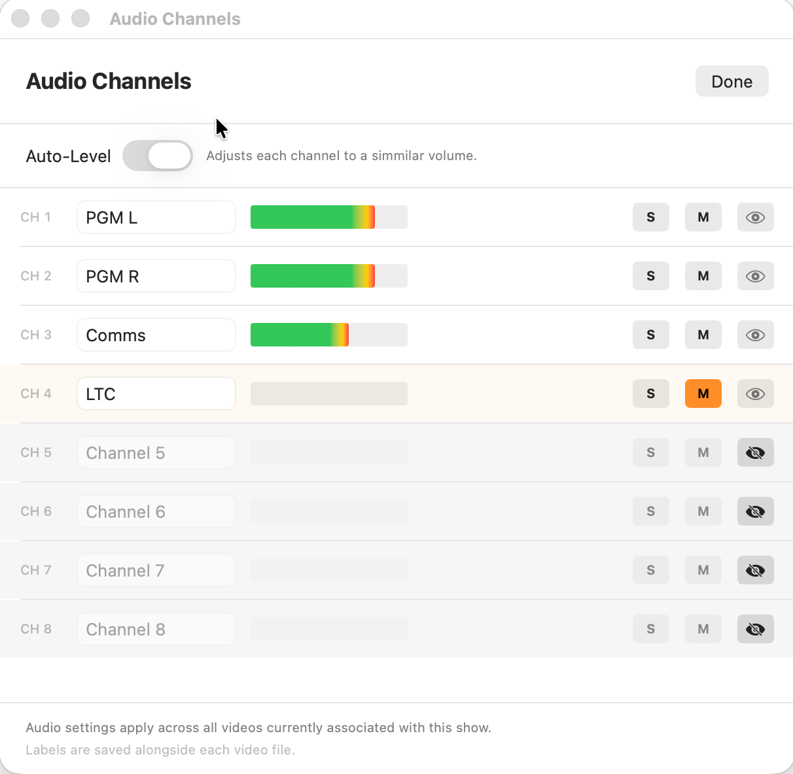

Hopper
Hopper
Audio
Hopper supports multichannel audio playback with per-channel mute, solo, and level controls — useful for recordings that have separate audio tracks such as PGM, Comms, and Timecode.
Overview
When you load a video, Hopper inspects its audio and exposes each channel individually in the Audio panel. Open it from the Audio menu or the speaker icon in the toolbar. If the file has only a single mono or stereo channel there are no additional controls to expose and the panel is not shown.

Channel controls
Each channel has three controls:
- Mute (M). Silences the channel. Muted channels still appear in the level meters so you can confirm signal is present even while silenced.
- Solo (S). Routes only this channel to the output. If more than one channel is soloed, all soloed channels play together. Soloing a single channel copies it to both left and right outputs so it is audible through a stereo system regardless of its original position.
- Hide. Removes the channel from the active mix entirely. Unlike mute, a hidden channel is excluded from auto-level calculations. Use this for channels that carry time code, click, or other non-audio content you never want to hear.
Level meters next to each channel update in real time during playback so you can identify which channels carry useful signal.
Auto-level
Enable Auto-level from the Audio menu to have Hopper continuously measure each channel's loudness and apply a compensating gain so all active channels sit at a similar level. This is useful when a recording has very different levels across audio tracks — for example a PGM feed that is much louder than a Comms or effects channel.
Auto-level uses a slow-moving average (roughly three seconds) so it reacts to sustained loudness differences rather than momentary peaks. Gains are frozen while the video is paused. The range is capped at −24 dB to +15 dB per channel to prevent extreme boosts on near-silent tracks.
Auto-level is best used as a monitoring convenience, not a mastering tool. It applies only to Hopper's output; the source file is unchanged.
Track labels
Channels are named automatically (Channel 1, Channel 2, etc.) unless the file embeds track names — which most recorders do not export. You can rename any channel directly in the Audio panel: click the label and type a new name (for example PGM, Comms, Timecode).
Labels are saved to the .hopper sidecar file alongside the rest of the project data, so your
names persist across sessions and can be shared with collaborators who open the same sidecar.